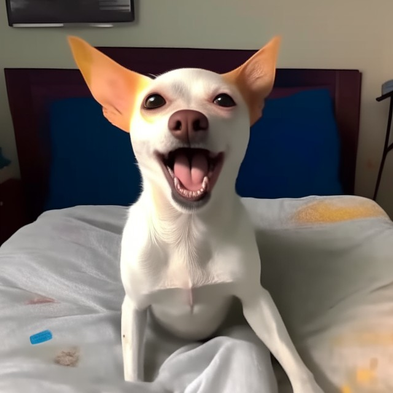

Descripción
Jagger Eduardo es un encantador perro de raza pincher cruzado con chiuaua, pero sin duda alguna, uno de los más queridos de toda Colombia. Nació el 12 de diciembre de 2018 en algún lugar especial del país. Desde el primer día, mostró su personalidad única, llena de amor y cariño hacia su dueño, Nelson Ortiz.

Desde el momento en que Jagger llegó a su nuevo hogar, quedó claro que se convertiría en el amor y señor de la casa. Con su pelaje blanco resplandeciente y su mirada tierna, conquistó a todos los miembros de la familia de Nelson. Su comportamiento amistoso y su lealtad inquebrantable lo convirtieron rápidamente en el fiel compañero de su dueño. A Jagger le encanta pasear y explorar el mundo que lo rodea. Cada vez que Nelson toma la correa, Jagger se llena de emoción, moviendo la cola con entusiasmo, ansioso por descubrir nuevos lugares y oler todos los aromas que encuentre en su camino. Pasear se ha convertido en una de las actividades favoritas de ambos, creando un vínculo inquebrantable entre ellos.
Los juguetes también son una gran debilidad para Jagger. Desde pelotas hasta peluches, siempre está dispuesto a jugar con su dueño. Nelson ha aprendido a conocer qué tipo de juguetes le gustan más a su leal amigo y se asegura de que Jagger siempre tenga algo divertido con lo que entretenerse.
Jagger ha demostrado ser un perro inteligente y cariñoso. Siempre está dispuesto a dar y recibir cariño, y se ha convertido en un miembro más de la familia Ortiz. Su presencia ha llenado el hogar de alegría y amor, y todos los días son especiales con él cerca.
Como un perro nacido en Colombia,Jagger ha tenido la oportunidad de disfrutar de los hermosos paisajes y el clima cálido del país. Ha compartido momentos inolvidables con su dueño mientras exploran juntos la naturaleza y crean recuerdos que perdurarán para siempre.
Jagger Eduardo es más que un perro blanco, es un ser querido que ha conquistado el corazón de su dueño y de todos quienes lo conocen. Su presencia ilumina cada día y demuestra que el amor incondicional de un perro puede enriquecer nuestras vidas de maneras inimaginables.